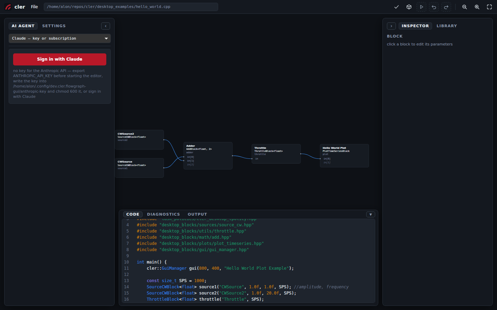
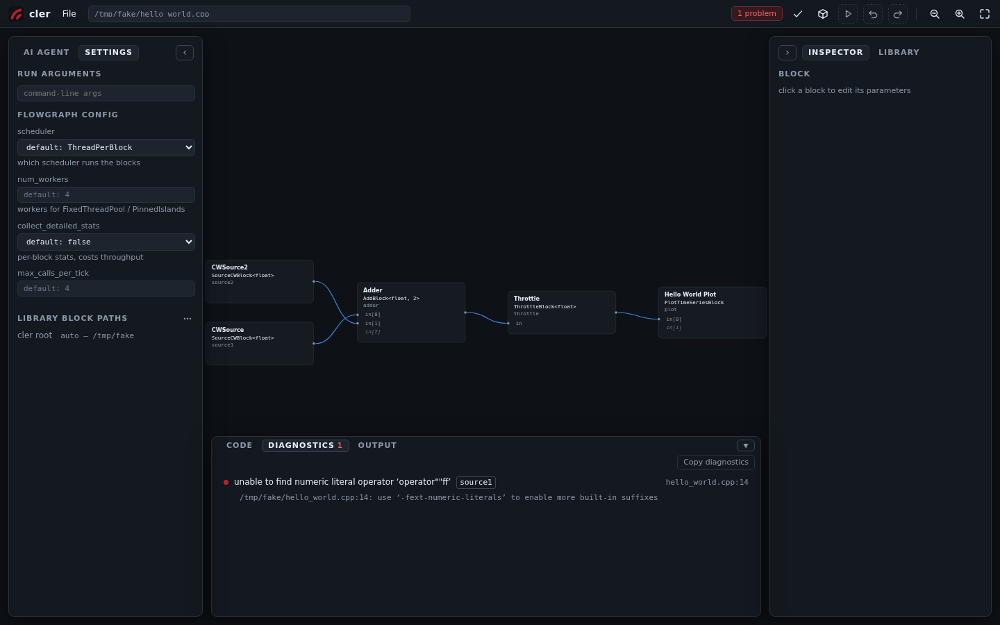
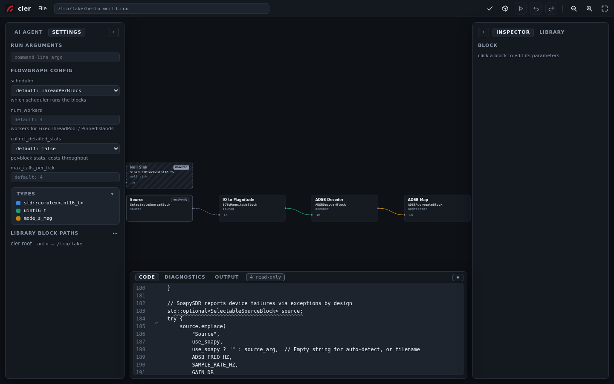

The C++ is the flowgraph.
cler-fg opens an existing CLER C++ flowgraph as a canvas. The .cpp remains the source of truth, and visual changes are written back as normal source edits.
How visual flowgraph tools usually work
Open GNU Radio Companion, move a block, press run. The .grc model remains the design and GRC rebuilds the runnable source from it. Its own tutorial makes the boundary explicit: generating the flowgraph overwrites the generated Python. Hand-edit that file and the next generation can erase the edit.
Simulink and LabVIEW keep the graphical model itself. Git treats Simulink's .slx as binary by default, so useful review and merging need Simulink's comparison tools. National Instruments says the same plainly about a LabVIEW .vi: its binary source needs special comparison and merge utilities.
These are coherent designs, and they make complex systems visible. The trade-off is that teams must treat the model, rather than generated source, as the authoritative representation:
- The model and generated program cannot both be edited as sources of truth.
- Custom behavior generally belongs in an extension point outside the generated program.
- Review happens in the model format or through a model-aware comparison tool.
cler-fg starts in the opposite direction. It does not generate C++ from a graph; it derives the graph from the C++.
Making C++ the source of truth
cler-fg has no document format of its own. It opens the C++ you already wrote — hello_world.cpp, last year's receiver, a graph from another team — parses it with tree-sitter, and draws a temporary projection. Blocks become boxes. Channels become wires colored by sample type. Flowgraph settings appear with the values the code will actually use.
Drag a wire and cler-fg finds the exact BlockRunner span and writes the connection into the source. Drop a library block and it places the include, constructor, and runner in the C++. Change a parameter and its constructor call changes. The code drawer underneath edits that same file, using the same undo history as the canvas.
The result is a structured source editor with two views. git diff shows the exact change to the C++ file the project already maintains.

hello_world.cpp, opened in place. Two sources, an adder, a throttle, a plot — and the file that says so, directly underneath.What changes in practice
| Common model-first workflow | cler-fg |
|---|---|
| A dedicated model file owns the design. | The existing .cpp owns the design. |
| A canvas edit changes the model; source may be regenerated. | A canvas edit changes one known span of C++. |
| A source edit can be overwritten or drift away from the model. | A source edit reparses into the canvas. |
| Review may require model-aware tools. | Review is an ordinary text diff. |
| The design remains coupled to its model format and tooling. | Close cler-fg. The program remains the same C++ file. |
Most of these differences follow from the same design choice: the plain source file remains authoritative.
Diagnostics and builds
Check, build, run: three actions in the top bar. When the compiler complains, cler-fg maps the diagnostic back to the block and source line that caused it. The short explanation is up front; the compiler's own message remains underneath when you need the detail.
Files outside the CLER repository are supported too. A flowgraph in a scratch directory or another repository builds against your CLER checkout inside a shadow workspace. The original tree stays clean, and the resulting binary retains provenance back to the document.

source1 and line 14.The editor knows when it does not know
This approach has a boundary: if the code owns the design, the canvas may change only what it can prove safe to change.
A block constructed inside a try through std::optional, for example, is valid C++ but not a simple declaration cler-fg can rewrite with confidence. The block still appears, marked read-only, and its reason follows it. The code remains yours to edit.
Halfway through typing, the source may not parse at all. cler-fg keeps the draft in the code drawer and pauses every canvas action that would have to guess. Each disabled action says why. Add the missing semicolon and the graph catches up.

std::optional inside a try, so the canvas preserves it and explains why it is read-only.The editor's first responsibility is to leave correct, hand-written C++ correct.
New block types also remain C++ headers rather than editor-specific definitions. The library scans desktop_blocks/ and the block directories you configure; write the header, and the palette discovers it.
Just ask
Press Ctrl+J and talk to the graph you are looking at. "Why is there a throttle before the plot?" gets an answer. "Add a spectrum sink after the filter" gets the block placed, wired, and included — you read the plain-language summary and press accept. Sign in with Claude or drop in an API key; nothing else to set up.
The agent works through the same validated graph operations as the canvas, so what it proposes always parses, always builds, and lands as one undo step. If you don't like it, undo.
Try it
Open it in your browser — the same editor over the bundled examples, running entirely client-side: place, wire, edit, undo, download your file. Build and Run work as well — Chrome fetches a wasm C++ toolchain on the first build, compiles and links your edited flowgraph, and runs it in a popup window; hardware blocks are out for obvious reasons, and the AI agent still needs the desktop app. To run locally, use the launcher at the repository root:
git clone https://github.com/cariboulabs/cler.git
cd cler
./cler_fg.shOpen desktop_examples/hello_world.cpp, move a wire, and run git diff to inspect the resulting BlockRunner change.